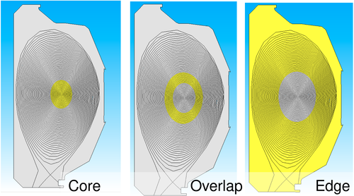

Core Concepts
- page concepts
The Rendezvous Algorithm
The Rendezvous algorithm
It is used in LAMMPS [1], the PUMI unstructured mesh library for loading multi-billion element meshes from file [2,3], and in the Data Transfer Toolkit [4].enables scalable algorithms which are most useful when processors neither know which other processors to send data to, nor which other processors will be sending data to them [1].
The following figures from [1] depict two unstructured meshes of the same domain where information from one mesh is needed by the other but they have a different partitioning across the same set of processes. In Figure 4 the colored ovals depict the domain owned by a given process in the two meshes. Since the domains are not intersecting the Rendezvous method is used to efficiently exchange data between the processes that do have the intersecting portion of the domain. A common domain partition, depicted by the red structured grid in the bottom two figures, allows processes that own data within a given cell in grid to ‘rendezvous’ with the other processes that own data in that cell and perform an exchange.

The key to the Rendezvous algorithm is a partitioning of the common portion of the domain that (1) has a relatively low memory usage and (2) supports computationally efficient queries for membership within the partition given a entity within the domain (e.g., a mesh element or vertex). The structured grid from the above figure is one possible partition that satisfies these requirements.
WDMApp Use Case
The WDMApp project combines an application that evolves the physics near the ‘edge’ of a fusion device (i.e., D3D, ITER, etc.) with another application that is responsible for the inner ‘core’ portion of the device near the magnetic axis.
The following figure depicts a conceptual division of the D3D domain into core and edge sub-domains where the respective applications are operating and an overlap sub-domain where fields on the mesh are exchanged and transformed.

The WDMApp Coupler is a set of procedures to support field transformations in the overlap sub-domain between application meshes and partitions that are different. For example, the following figure depicts a 16 process partition created with a geometric recursive bisection method on the left and a four process partition using groupings of geometric model faces. The Rendezvous algorithm allows the WDMApp Coupler to define its own partition of the domain and efficiently collect, and transform, field data from the core and edge applications.

Redev Design
Redev is an implementation of the Rendezvous algorithm that is currently focused on supporting the WDMApp Coupler and its use of independent sets of MPI processes for the core and edge applications. Specifically, each of these applications is executed with its own
mpirun(or equivalent batch scheduler) command. Transferring data between these sets of processes is directly supported by the ADIOS2 library.Key to the Redev design is the concept of a Server and Clients. A Client is a set of processes that owns some portion of the overlap sub-domain and needs to exchange data in that domain with another Client. Clients query the Redev API to (1) determine which processes in the Server the data they own needs to be sent, (2) send the data, and (3) receive data back from the server in their portion of the domain. The Server is a set of processes that owns the Rendezvous partition of the overlap sub-domain, receives data from Clients, and supports sending the data back to the Clients.
The following figure depicts an example Redev workflow for exchanging data between two applications (Clients) and the Coupler (the Server). The Rendezvous partition in this example is formed from groups of adjacent geometric model entities referred to as a ‘Feature-based Partition’. Red colored boxes and text are operations supported by Redev. The phases of the workflow are described below.
App. Setup: The applications initialize its domain data by loading meshes, and associated partition data. The Coupler loads the geometric model of the domain.
Rdv. Setup: The coupler forms the ‘Feature-based Partition’ used for Rendezvous, and sends partition information to an instance of Redev embedded into each application.
Mesh Setup: Each application queries the rendezvous partition in a loop over their mesh entities in the overlap sub-domain and create a map of mesh entities to their destination rank in the Coupler. Using a communication object established for the connection between each application and the Coupler a Forward send is performed from the applications to the Coupler. This initial Forward send, and the meta data associated with it that describes which application rank sent each portion of the data, enables the construction of a Reverse send from the Coupler back to the appropriate application processes.
Field Transfer: The Forward and Reverse sends are repeatedly executed until the coupled simulation completes. The figure depicts one of portion of a communication round that performs a Forward send from application ‘A’ to the Coupler, execution of a field transformation procedure marked ‘mesh-to-mesh’, and a Reverse send from the Coupler to application ‘B’. The communication round would be completed with the mirror image of this process; a Forward send from ‘B’ to the Coupler, another transformation, and a Reverse send from the Coupler to ‘A’.

References